The notebooks
Data, preprocessing and validation
File inventory, schema and encoding checks, exact vote reconciliation against the TSE totals, seat counts, the TSE to IBGE crosswalk and the geometry - the entry point of the project.
National Panorama
Electorate and turnout, the presidential race in two rounds, the municipal geography of the vote, and the translation of votes into 513 Chamber seats.
States, Congress and the Senate
All 27 governorships, the 54-seat Senate class, Chamber and assembly composition, disproportionality by state, and a dossier with an interactive map for every federal unit.
Electorate, Age and Demography
The 158.7 million voters by age, gender and schooling; the age pyramid; and the ecological test of whether demography predicts the vote and the turnout.
Source notebooks: 00 · 01 · 02 · 03 (.ipynb, for JupyterLab or VS Code)
Figures
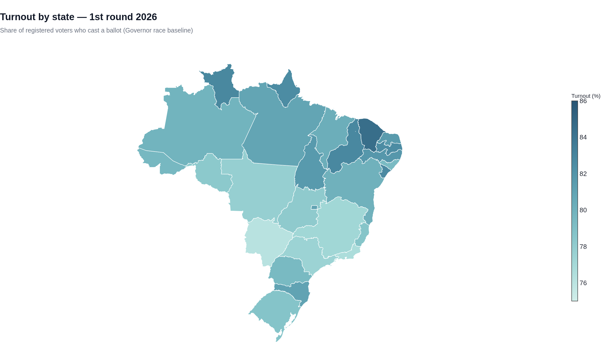
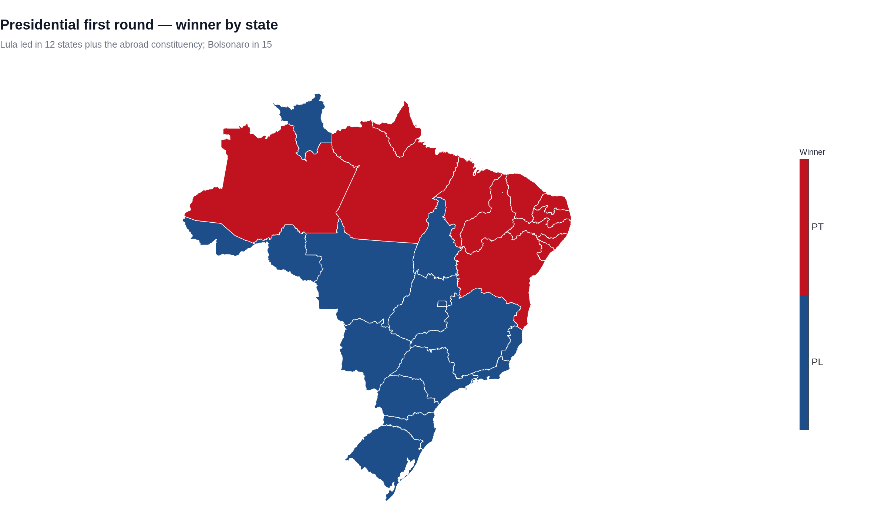
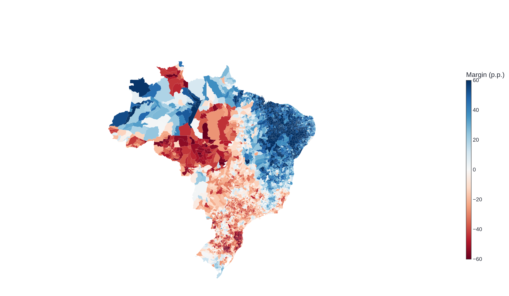
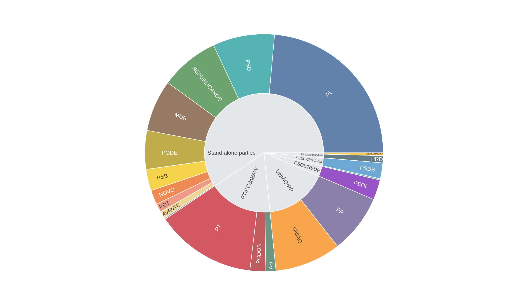
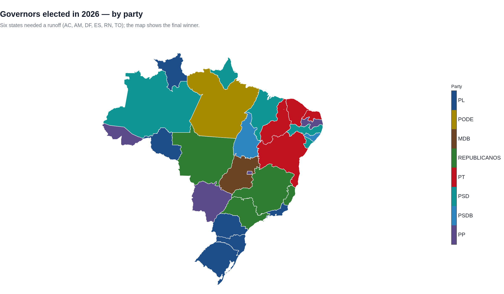
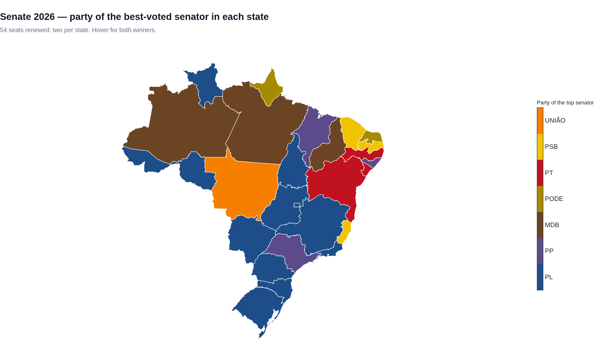
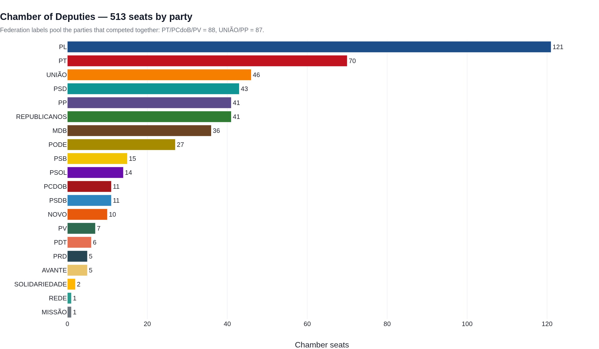
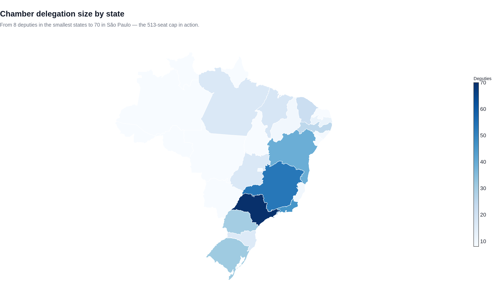
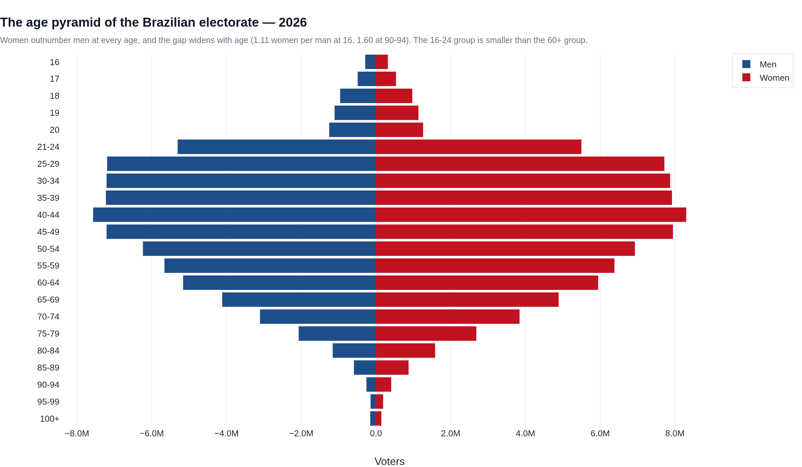
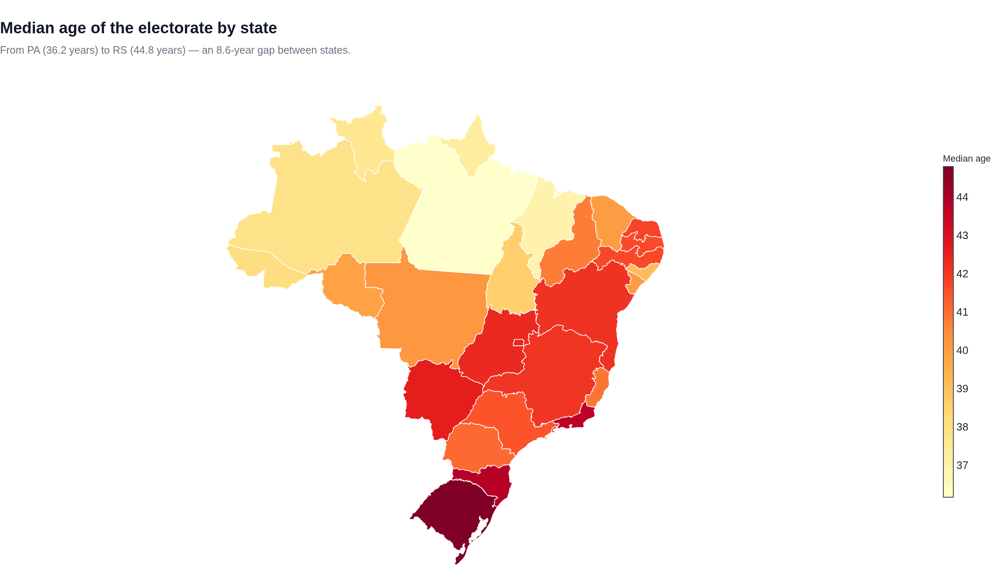
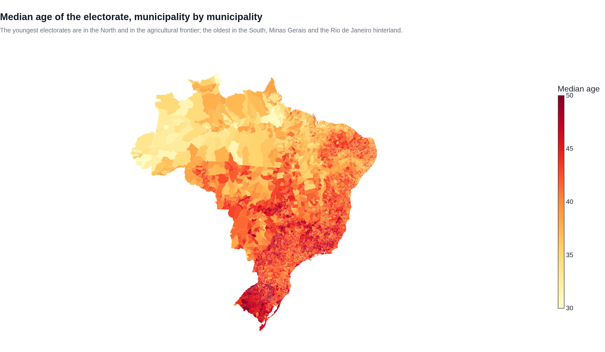
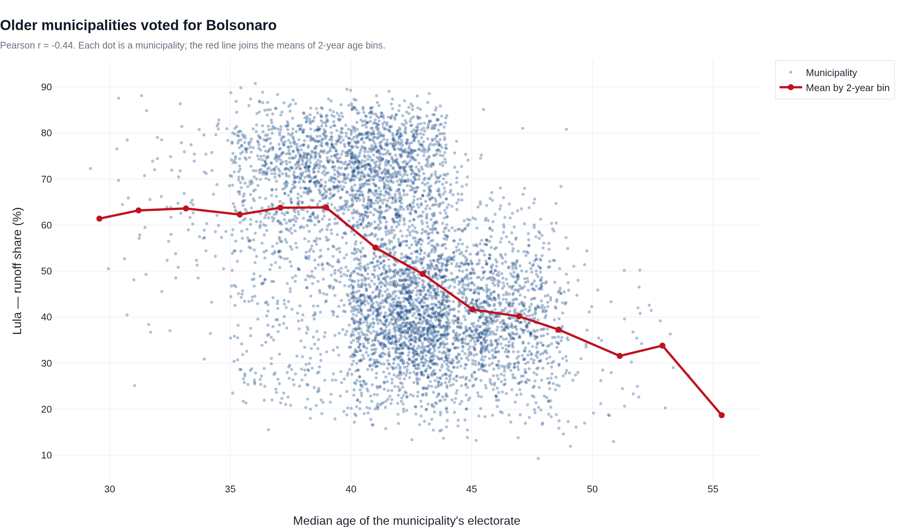
How it is built
Raw data: TSE votacao_candidato_munzona_2026 (27 files, 6.0 GB), detalhe_votacao_munzona_2026,
votacao_secao_2026_BR, perfil_eleitorado_2026 and consulta_cand_2026;
geometry from the IBGE 2022 municipal and state meshes. The pipeline in scripts/ converts everything to
Parquet caches with DuckDB, matches the 5,571 TSE municipality codes to IBGE codes, simplifies the polygons and keeps
the map winding compatible with Plotly. The notebooks read only the caches, so they run in seconds.